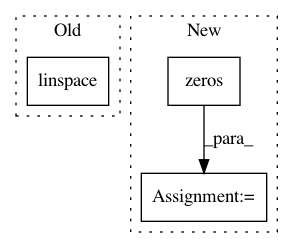

45d63060d155077f97e3cb42cf7551ec03af987c,gpytorch/kernels/grid_interpolation_kernel.py,GridInterpolationKernel,initialize_interpolation_grid,#GridInterpolationKernel#Any#Any#,14
Before Change
def initialize_interpolation_grid(self, grid_size, grid_bounds):
super(GridInterpolationKernel, self).initialize_interpolation_grid(grid_size, grid_bounds)
grid_size = grid_size
grid = torch.linspace(grid_bounds[0], grid_bounds[1], grid_size - 2)
grid_diff = grid[1] - grid[0]
After Change
super(GridInterpolationKernel, self).initialize_interpolation_grid(grid_size, grid_bounds)
self.grid_size = grid_size
self.grid_bounds = grid_bounds
self.grid = torch.zeros(len(grid_bounds), grid_size)
for i in range(len(grid_bounds)):
grid_diff = (grid_bounds[i][1] - grid_bounds[i][0]) / (grid_size - 2)
self.grid[i] = torch.linspace(grid_bounds[i][0] - grid_diff,
grid_bounds[i][1] + grid_diff,
grid_size)
self.grid = Variable(self.grid)
return self
def forward(self, x1, x2, **kwargs):
n, d = x1.size()
In pattern: SUPERPATTERN
Frequency: 3
Non-data size: 3
Instances
Project Name: cornellius-gp/gpytorch
Commit Name: 45d63060d155077f97e3cb42cf7551ec03af987c
Time: 2017-08-29
Author: ruihan.wu14@gmail.com
File Name: gpytorch/kernels/grid_interpolation_kernel.py
Class Name: GridInterpolationKernel
Method Name: initialize_interpolation_grid
Project Name: Qiskit/qiskit-aqua
Commit Name: 1f438ce2af4f38f55c4fbdaf8e6d2a04895377a3
Time: 2019-04-10
Author: stefan@swoerner.de
File Name: qiskit/aqua/components/random_distributions/multivariate_distribution.py
Class Name: MultivariateDistribution
Method Name: __init__
Project Name: CellProfiler/CellProfiler
Commit Name: 95f1ce19437e1e340b078baf6090232b8d88d360
Time: 2010-09-22
Author: afraser@1fc53939-2000-0410-845c-e8453a809027
File Name: imagej/tests/test_ijbridge.py
Class Name:
Method Name: